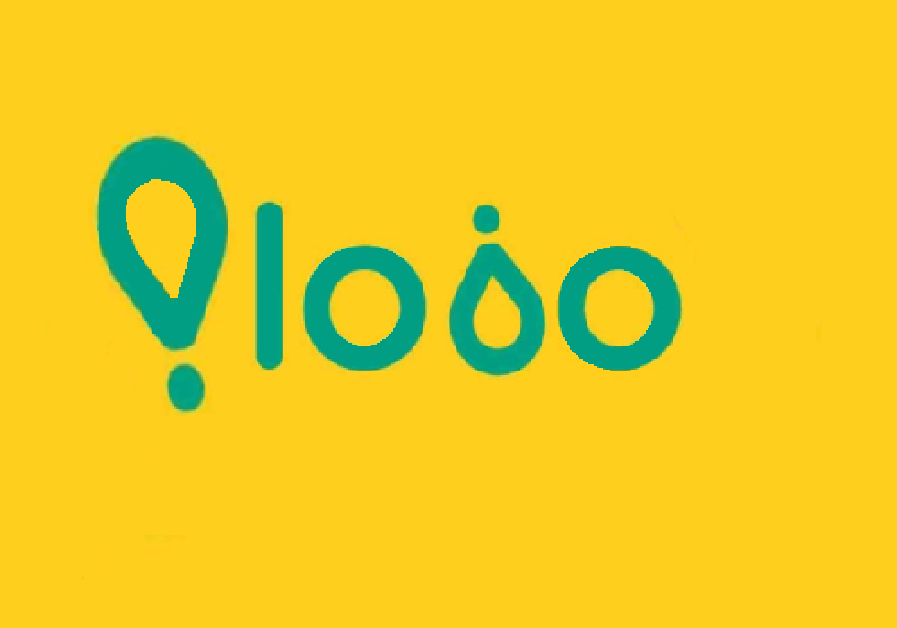

Hola!
Puedes encontrarnos en estas Redes Sociales, agradecemos tu apoyo.

Desarrollando PLOBO

Kulenga Studios es un grupo de estudiantes de videojuegos de la UCM.
Está formado por: Francisco Miguel Galván, Sheila Julvez, Cristina Mora y Jose Moreno
Creadores de juegos como NEON RISING